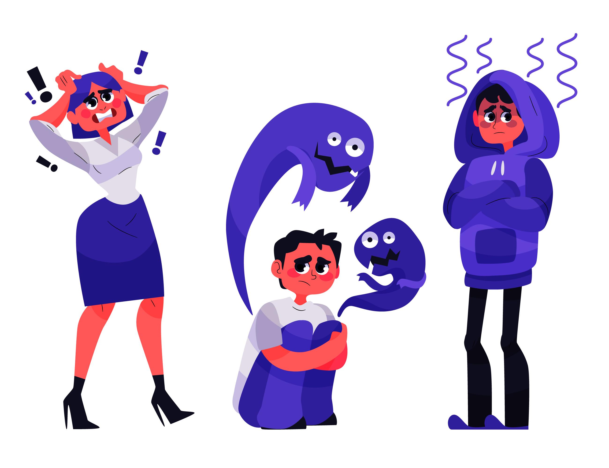
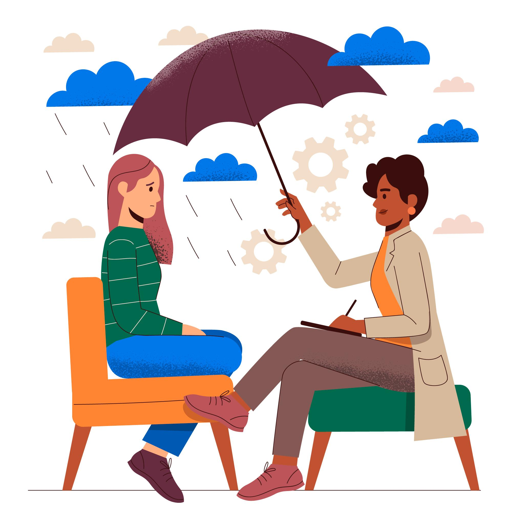

Grupo mais Saúde
Levando informações sobre saúde mental
Precisa de ajuda?

É difícil lidar com momentos de crises relacionadas a saúde mental.
Independente do tipo de transtorno enfrentado, dificuldades similares podem ocorrer.
Uma crise é caracterizada principalmente por comportamentos que atrapalhem a pessoa de realizar
suas tarefas diárias e que indiquem que ela possa por em perigo sua vida ou a dos próximos.
Como posso saber se estou passando por uma crise de saúde mental?
Tenha em mente que você não precisa ter todos os sintomas abaixo, pois as crises diferem muito de
uma pessoa para outra.
Alguns sinais podem incluir:
- Dificuldade em executar tarefas básicas (ex.: levantar da cama, comer ou tomar banho)
- Mudanças drásticas no humor
- Pensamentos suicidas ou planejamento
- Auto-mutilação
- Afastamento de amigos e parentes
- Desinteresse por atividades que antes eram divertidas
O que posso fazer ao passar por uma crise?
Se você está passando por uma emergência, é importante que procure ajuda o quanto antes.
É possível entrar em contato com o suporte do CVV (Centro de Valorização a Vida), que conta com
ajuda via telefone, chat:
Precisa de ajuda imediata?(clique aqui)
Entre em contato com um dos voluntários do Centro de Valorização à Vida.
- Disponível 24 horas por telefone e no seguinte horário por chat: Dom - 17h à 01h, Seg a Qui - 09h à 01h, Sex - 15h às 23h, Sáb - 16h à 01h.

Além disso, se você sente que uma crise está chegando, não espere os sintomas piorarem.
Procure um amigo ou algum familiar de confiança e conte o que está acontecendo.
Eles podem ajudar a procurar ajuda médica.
Se você acha que consegue lidar com a situação sozinho, tente fazer atividades para tentar se
distrair como caminhar, ver um filme ou brincar com um pet (caso tenha).
Depois de uma crise, é importante considerar iniciar um tratamento psicológico. Na terapia podem
ser discutidas estratégias para te ajudar a lidar melhor com as próximas crises, e contar com uma
rede de apoio profissional.